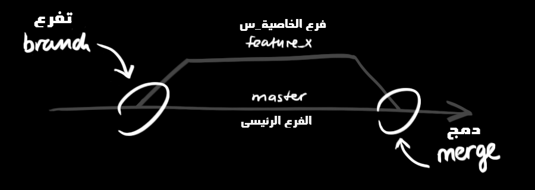

جت (git) الدليل المبسط - من دون تعقيد
:) فقط، دليل بسيط لتعلم كيفية استخدام اداة الgit بسرعة و من دون تفاصيل
Tweet:) فقط، دليل بسيط لتعلم كيفية استخدام اداة الgit بسرعة و من دون تفاصيل
Tweet
انشاء وفتح مجلد (Directory) جديد ومن ثم القيام بالاجراء
git init
لعمل مستودع جت جديد
استخدام الامر التالي لانشاء نسخة للعمل (working copy) من مستودع موجود على الجهاز (اي محلي)
git clone /path/to/repository
او الامر التالي في حال الاستنساخ عن بعد (remotely) من خادم
git clone username@host:/path/to/repository
يتكون المستودع المحلي من ثلاث "شجرات" يتم التعامل معها كلها عن طريق جت,
الاولى و تدعى بمجلد العمل Working Directory و هي تحوي الملفات الفعليةاللتي يتم العمل عليها,
و الثانية تدعى بالفهرس Index و هي تقوم باحتواء الملفات المعدلة و المدرجة للتغيير,
واخيرا الرأس HEAD وهو مؤشر على أخر التغييرات اللتي تم القيام بها
يمكن اقتراح التغييرات (اضافتها و ادراجها ضمن الفهرس) باستخدام
git add <filename>
git add *
و تعتبر هذه اولى الخطوات في طريقة سير العمل الاساسية للجت. ولاكن لإجراء التغيير فعلا فإنه يتم استخدام الامر التالي
git commit -m "Commit message"
الان وفي هذه الحالة, فقد تم اجراء التغييرات فعلا و سيكون الرأس مؤشرا عليها, لاكنها ليست مصدرة الى المستودع الخارجي (the remote repository) بعد
جميع التعديلات اللتي تمت على النسخة المحلية محفوظة و مؤشر عليها عن طريق الرأس. ولارسال هذه التغييرات للمستودع الخارجي يتم استخدام الامر التالي
git push origin master
الرجاء تعديل كلمة master لأي اسم فرع بديل تريدون دفع التغييرات اليه
اذا لم تقومو باستنساخ مستودع خارجي موجود من قبل, و اردتم ربط مستودعكم المحلي مع آخر خارجي, فعليكم اضافته عن طريق مايلي
git remote add origin <server>
الآن يمكنكم الدفع بالتغييرات للمستودع الخارجي اللذي اضفتموه بالخطوة السابقة
يتم استخدام الفروع لتطوير خصائص و ميزات المشروع بمعزل تام عن باقي الافرع الاخرى. إذ يعتبر الفرع الرئيسي و اللذي يدعى بالmaster هو الفرع الاساسي واللذي يتم عمله تلقائيا عند انشاء المستودع في المرة الاولى, لذا عليكم عمل فروع جديدة من الفرع الرئيسي واستخدامها للتطوير واخير دمجها مجددا مع الفرع الرئيسي حال الإنتهاء منها

لعمل فرع جديد تحت اسم "feature_x" و من ثم التحويل اليه
git checkout -b feature_x
للعودة مجددا للفرع الرئيسي
git checkout master
و للتخلص من الفرع اذا لم يعد له حاجة
git branch -d feature_x
لن تكون الفروع متوفرة للآخرين تلقائيا إلا في حال قمتم بالدفع بها للمستودع الخارجي عن قصد
git push origin <branch>
لتحديث المستودع المحلي ليتوافق مع آخر التغييرات استخدموا الامر
git pull
على نسختكم المحلية لاستدعاء (fetch) و دمج (merge) التعديلات القادمة من المستودع الخارجي
للدمج من فرع آخر قادم مع الفرع الفعال الحالي (الماستر مثلا) عليكم استخدام
git merge <branch>
في كلا الحالتين سيحاول جت الدمج تلقائيا ما بين الفرع القادم و الفرع الفعال المحلي, إلا انه و للأسف قد لا يكون ذلك ممكنا خاصة في حال وجود تغييرات على نفس الاسطر من كلا الطرفين, مما يسبب بما يسما بالتعارض (conflict)
وفي هذه الحالات يكمن معالجة هذه التعارضات على عاتق المطور. و يكون ذلك يدويا من خلال تعديل السطور للحالة الصحيحة و من ثم دمجها عن طريق الامر
git add <filename>
يمكنم معاينة التعديلات قبل دمجها عن طريق الامر
git diff <source_branch> <target_branch>
ننصحكم بتعليم اصدارات برامجكم عن طريق وسمها بأسام مميزة. وتعتبر هذه ممارسة جيدة, كوسم الاصدارات بأسماء مثل (1.0.0), و يتم ذلك عن طريق الامر
git tag 1.0.0 1b2e1d63ff
المعني ب1b2e1d63ff هي اول 10 رموز من رقم (commit id) التغيير المراد وسمه
يمكنكم التعرف غلى رقم التغييرات عن طريق القسم التالي
يمكنكم عرض و تأريخ سجل التغييرات لدراستها عن طريق
git log
و يمكنكم اضافة العديد من عوامل التغيير (parameters) لذلك الامر لجعل عرض السجل اكثر تحديدا كعرض جميع التغييرات اللتي قام احدهم بكتابتها مثلا
git log --author=bob
او لعرض سجل مختصر بحيث يكون كل سطر عبارة عن تغيير واحد
git log --pretty=oneline
او قد تريدون عرض سجلات جميع الفروع بطريقة مزخرفة و منسقة و ايضا عرض اسامي الاوسمة المتوفرة عليها
git log --graph --oneline --decorate --all
او اذا اردتم الاكتفاء بعرض اسماء الملفات المعدلة فقط
git log --name-status
هذه تعتبر عينة فقط مما هو متوفر من عوامل التغيير لهذا الامر. لمعرفة المزيد, الرجاء الاطلاع على
git log --help
في بعض (او الكثير) من الاحيان قد تكونوا قد اخطأتم في تعديلات احدى الملفات و تريدون التراجع عنها, يمكنك ذلك عن طريق استبدال التعديلات المحلية باستخدام الامر التالي
git checkout -- <filename>
يقوم هذا الامر باستبدال التعديلات المحلية للملف بآخر نسخة محفوظة في المستودع و مشار عليها من قبل الرأس.
بالطبع التعديلات المضافة للفهرس او الملفات الجديدة و الغير خاضعة لمراقبة جت ستبفى و لن يتم العبث بها
وفي المقابل, ان اردتم الاستغناء عن جميع التعديلات المحلية لكل الملفات, فبإمكانكم استدعاء آخر التغييرات المضافة للمستودع المحلي او الخارجي. و من ثم اعادة توجيه رأس الفرع الحالي لآخر تغيير كما هو موضح ادناه
git fetch origin
git reset --hard origin/master
تطبيقات جت مدمجة مع واجهة رسومية (GUI) ان كنتم تفضلون ذلك
git-gui
gitk
تلوين مخرجات الاوامر المختلفة
git config color.ui true
اظهار السجل بشكل سطر واحد لكل تغيير
git config format.pretty oneline
اضافة الملفات للفهرس بشكل تفاعلي
git add -i
التعليقات